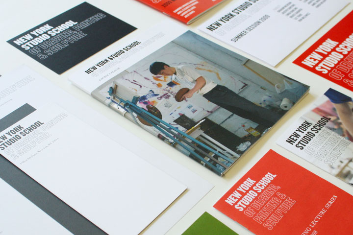
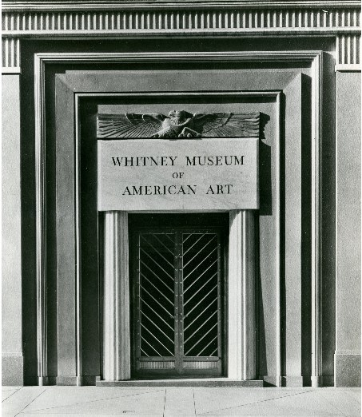
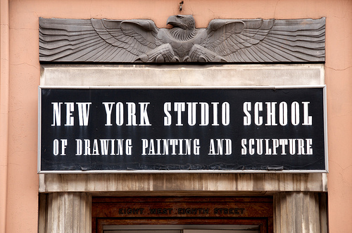
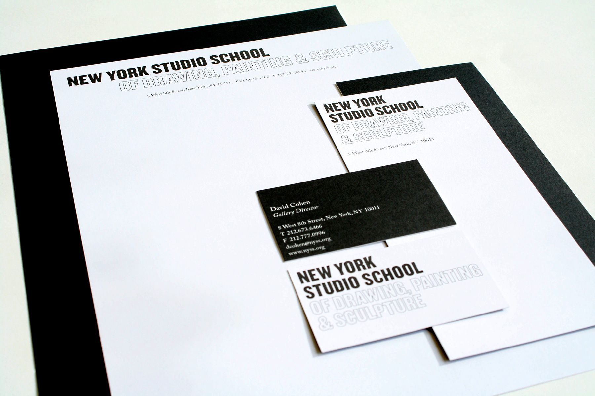
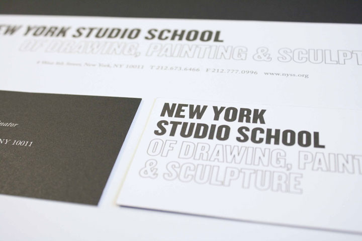
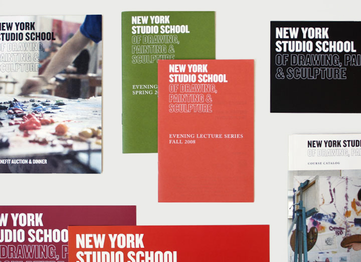
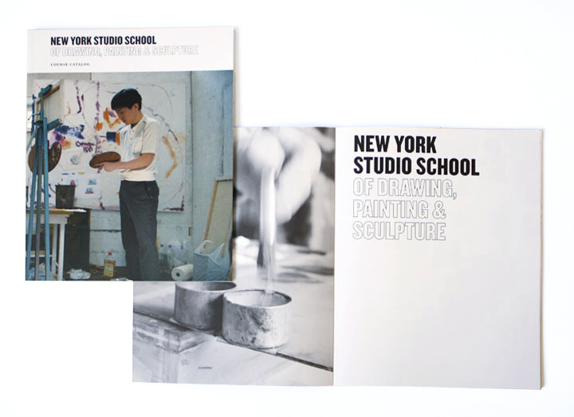
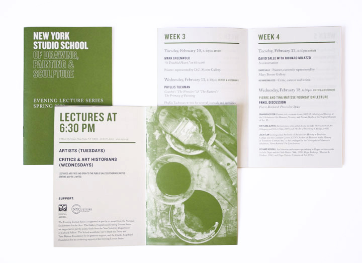
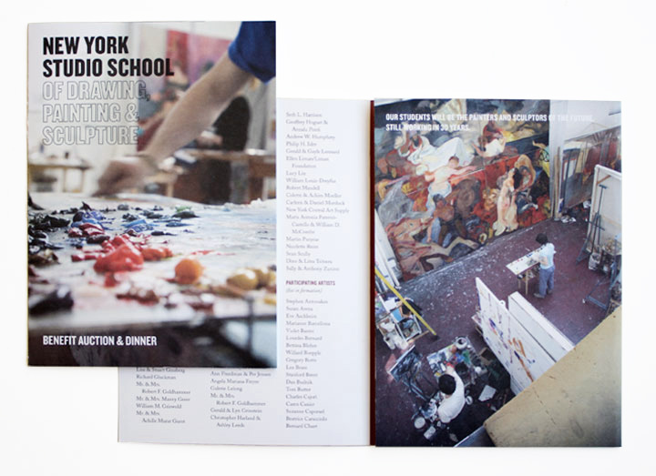
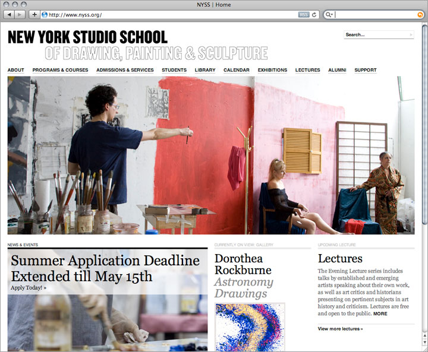

Get in touch.

This was designed in collaboration with Sarah Gephart at mgmt. design in Brooklyn, New York.

The New York Studio School is the definition of classic art institutions its walls live and breath modernism, it was founded by Mercedes Matter in 1964. The original identity was of course designed by her life long companion Herbert Matter, there were some big shoes to fill.
The original sign for the Whitney Museum on a Greenwich Village building now home to the New York Studio of Drawing, Painting and Sculpture.

The redesign was inspired by a calendar of events that Herbert designed for the school, it was impossible not to be inspired by the treasure trove of printed material the school accumulated over the years.
This is not the original identity over the entrance of the school but we really fell in love with the letter forms.


In the stationary system we created a custom color of black and silver to emulate a soft graphite pencil.




